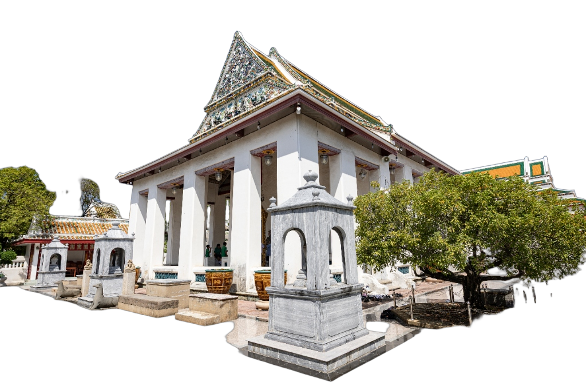
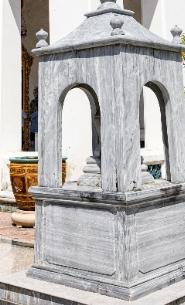

อาคารปฐมฤกษ์แห่งสยามที่ปรับเปลี่ยนจากขนบประเพณีนิยมเดิม สู่การปฏิวัติทางโครงสร้างแบบ "พระราชนิยม" ในรัชกาลที่ ๓ ผสานสุนทรียศาสตร์ช่างหลวงและศิลปะจีนอย่างสง่างาม

ลายดอกโบตั๋นและเครื่องมงคล ไร้ช่อฟ้าใบระกา

สลักหินแกรนิตทรงเก๋งจีน ยอดโดมศิลาประณีต
อ่างกระเบื้องมังกรและอับเฉาศิลาจีน พิทักษ์พระอาราม
ยกเลิกเครื่องบนไม้แกะสลักเดิม เปลี่ยนเป็น หน้าบันก่ออิฐถือปูนทึบ ประดับกระเบื้องเคลือบจีนลายดอกโบตั๋น ทนแดดฝนและคงทนถาวร
ใช้ เสาสี่เหลี่ยมขนาดใหญ่ไม่มีบัวหัวเสา และไม่ใช้คันทวยรับชายคา มอบความรู้สึกสงบนิ่ง แข็งแกร่ง โอ่อ่า และมั่นคงดั่งขุนเขา
ตั้ง ซุ้มสีมาหินสลักแบบเก๋งจีน สี่เสารอบพระอุโบสถ รายล้อมด้วยสิงโตหินอับเฉา สะท้อนดุลยภาพความสัมพันธ์ทางการค้าสยาม-จีน